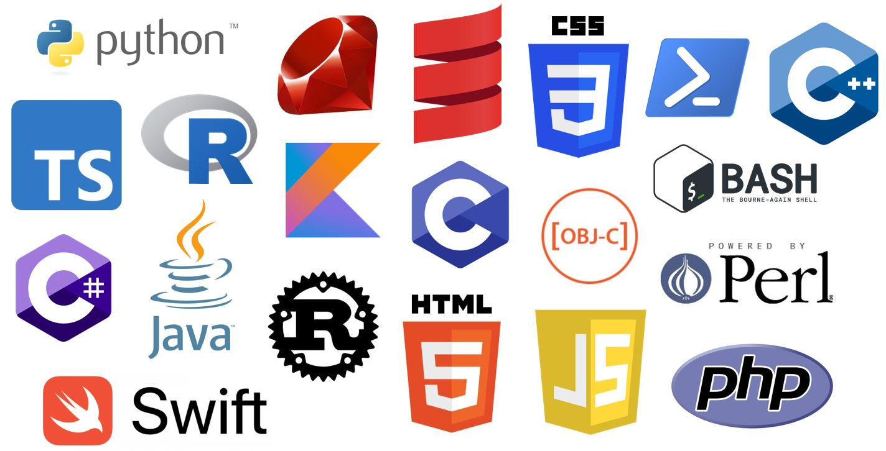
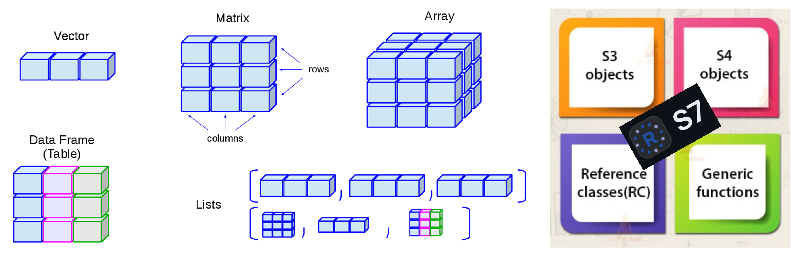
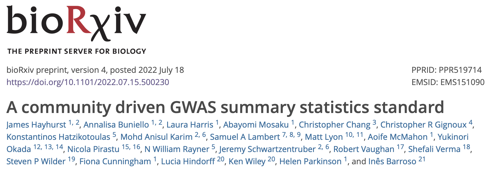
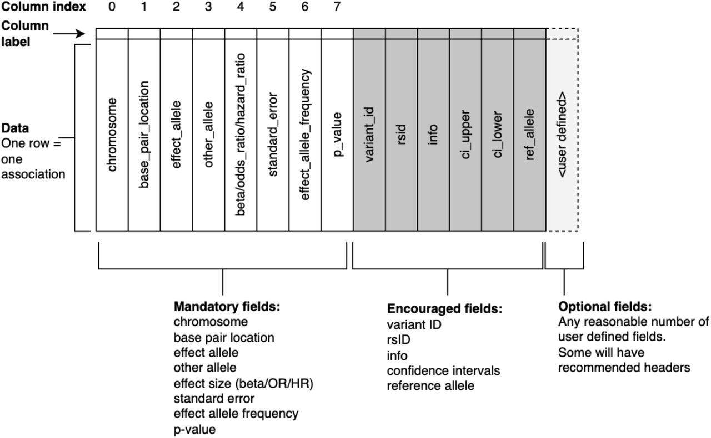
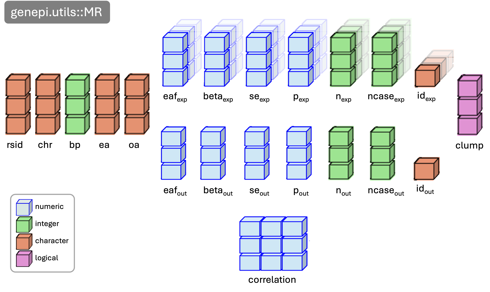
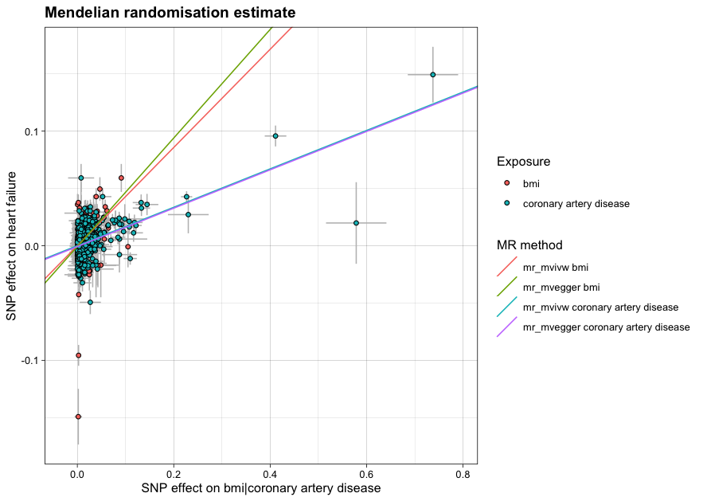
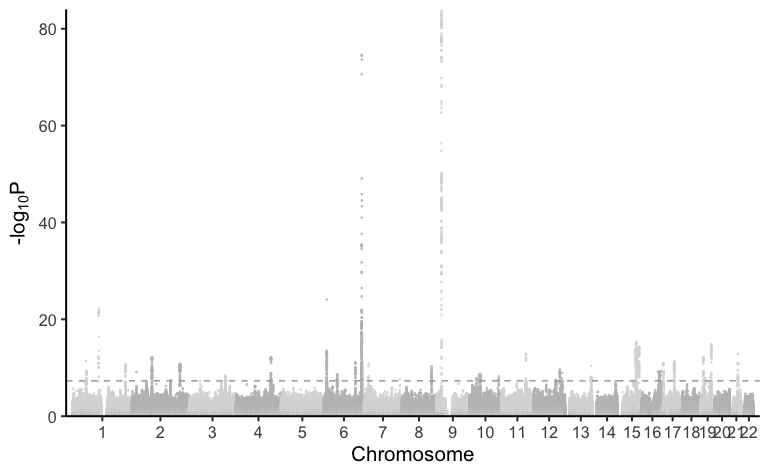
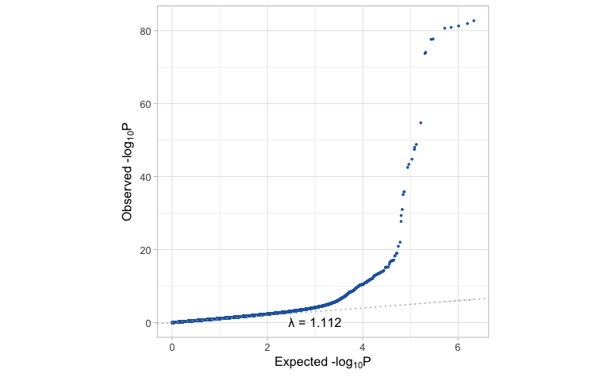
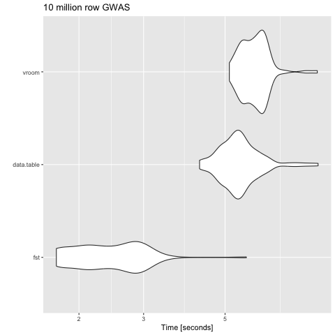
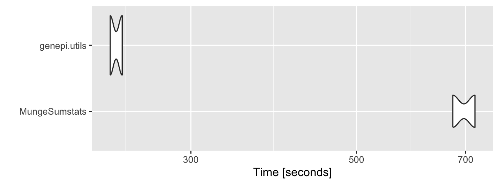

Rationale and key points
rationale.RmdThe primary motivation for creating this package was to increase my understanding of the many tools used in the processing of GWAS data and Mendelian randomization analyses at the start of my PhD. Like many people new to the field, I found there to be an overwhelming number of options in many different languages, designed with slightly different use cases in mind.
Roadmap
Phase 1 was aimed at simple GWAS processing:
1. Reading files
2. Field / column name standardiation
3. Quality control and cleaning
Phase 2 was aimed at common GWAS routines:
4. Clumping
5. Annotating RSIDs
6. Generating LD matrices
7. Finding proxies variants
Phase 3 was aimed at more specific routines:
8. Calling UVMR & MVMR routines from TwoSampleMR and
Mendelian Randomization
9. Index-event bias - calling IndexEvent and MR
routines
Choice of language
The most commonly used languages for data analysis are R
and Python, with many command line porgrammes written in
C++ and C. For ease of use, familiarity, and
prospect of onoing collaboration I wrote this in R.

Representation of GWAS data
The next question I had was how to represent GWAS in R.
The obvious choice is a simple vectors or data.frames, but the range of
structures used across common genetic epidemiology packages is wide,
ranging from lists (that can take any data type and often require
separate validation functions - e.g. coloc) to layers of
custom classes that can be difficult to understand and re-use.

GWAS data specification
The GWAS data we need for the majority of analyses is well defined
but the range of data formats out in the wild is all too often lacking.
Data standardisation continues to be addressed and there exists many
good resources and recommended specifications.


S7
I really wanted an object-orientated approach and after initial
frustrations with the S4 and R6 class systems
I was made aware of the new S7 class system. Being probably
too quick to jump on the latest trend I refactored my initial code into
S7. I liked the S7 class system as it has
strongly typed properties and simplifies what can be quite complex
idiosyncrasies in S4. It also has a really nice constructor
and validation process built in.
Simple S7 class
library(S7)
# define a new class
CodeClinicSession <- new_class(
name = "CodeClinicSession",
properties = list(
presenter = class_character,
date = class_Date
)
)
# create a CodeClinicSession object
session <- CodeClinicSession("nick", as.Date("2024-07-25"))
session
#> <CodeClinicSession>
#> @ presenter: chr "nick"
#> @ date : Date[1:1], format: "2024-07-25"
# define a generic print function
method(print, CodeClinicSession) <- function(x) {
cat("CodeClinicSession\n")
cat("\tPresenter:", x@presenter, "\n")
cat("\tDate:", format(x@date, "%d-%m-%Y"), "\n")
}
print(session)
#> CodeClinicSession
#> Presenter: nick
#> Date: 25-07-2024S7 property validation
# define a more complicated class
CodeClinicSession <- new_class(
name = "CodeClinicSession",
properties = list(
presenter = new_property(class = class_character,
validator = function(value) {
valid_presenters <- c("nick sunderland", "foo", "bar")
if (!value %in% valid_presenters) {
found <- grep(value, valid_presenters, value = TRUE)
if (length(found) > 0) {
return(paste(value, "- did you mean presenter", found, "?"))
} else {
return(value)
}
}
}),
date = new_property(class = class_Date,
default = Sys.Date())
)
)
# create a CodeClinicSession object
try(CodeClinicSession("nick"))
#> Error : <CodeClinicSession> object properties are invalid:
#> - @presenter nick - did you mean presenter nick sunderland ?
try(CodeClinicSession("nick sunderland"))
#> CodeClinicSession
#> Presenter: nick sunderland
#> Date: 07-10-2024S7 constructor
# define a more complicated class
CodeClinicSession <- new_class(
name = "CodeClinicSession",
properties = list(
presenter = class_character,
date = class_Date
),
constructor = function(some_text) {
# parse some text
valid_presenters <- c("nick sunderland", "foo", "bar")
presenter <- valid_presenters[sapply(valid_presenters, grepl, some_text, ignore.case = TRUE)]
date <- as.Date(sub(".*?([0-9]+-[0-9]+-[0-9]+).*", "\\1", some_text))
# load the properties
object <- new_object(S7::S7_object(),
presenter = presenter,
date = date)
# return the object
return(object)
}
)
# create a CodeClinicSession object
session <- CodeClinicSession("Nick Sunderland presenting on 2024-07-25")
session
#> CodeClinicSession
#> Presenter: nick sunderland
#> Date: 25-07-2024GWAS class
Putting this all together I created a GWAS class.
GWAS <- new_class(
#==============================
# GWAS class name
#==============================
name = "GWAS",
package = "genepi.utils",
#==============================
# GWAS class properties
#==============================
properties = list(
#----------------------------
# column name mapping
#----------------------------
map = ColumnMap,
#----------------------------
# qc procedures
#----------------------------
qc = class_list,
#----------------------------
# column names / data vectors
#----------------------------
rsid = class_character,
chr = class_character,
bp = class_integer,
ea = class_character,
oa = class_character,
eaf = class_numeric,
beta = class_numeric,
se = class_numeric,
p = class_numeric,
n = class_integer,
ncase = class_integer,
strand = class_character,
imputed = class_logical,
info = class_numeric,
q = class_numeric,
q_p = class_numeric,
i2 = class_numeric,
#----------------------------
# correlation matrix
#----------------------------
correlation = new_S3_class('matrix'),
#----------------------------
# meta data
#----------------------------
trait = class_character,
id = class_character,
source = class_character
),
#==============================
# GWAS class constructor func.
#==============================
constructor = function(dat,
map = "default",
drop = FALSE,
fill = FALSE,
fill_rsid = FALSE,
missing_rsid = "fill_CHR:BP",
parallel_cores = parallel::detectCores(),
dbsnp_dir = genepi.utils::which_dbsnp_directory(),
filters = list(
beta_invalid = "!is.infinite(beta) & abs(beta) < 20",
eaf_invalid = "eaf > 0 & eaf < 1",
p_invalid = "!is.infinite(p)",
se_invalid = "!is.infinite(se)",
alleles_invalid = "!is.na(ea) & !is.na(oa)",
chr_missing = "!is.na(chr)",
bp_missing = "!is.na(bp)",
beta_missing = "!is.na(beta)",
se_missing = "!is.na(se)",
p_missing = "!is.na(p)",
eaf_missing = "!is.na(eaf)"),
reference = NULL,
ref_map = NULL,
verbose = TRUE,
...) {
if(verbose) message("Loading GWAS ...")
# parse the map
map <- ColumnMap(map)
# as data table
if(inherits(dat, 'data.frame') && !inherits(dat, 'data.table')) { dat <- data.table::as.data.table(dat) }
# load (either from file or data.frame)
gwas <- load_gwas(dat, map=map, drop=drop, fill=fill, verbose=verbose)
# ensure correct type
gwas <- type_columns(gwas, map=map, verbose=verbose)
# standardise columns
gwas <- standardise_columns(gwas, verbose=verbose)
# standardise alleles
gwas <- standardise_alleles(gwas, verbose=verbose)
# apply filters
g <- apply_filters(gwas, filters=filters, verbose=verbose)
gwas <- g$gwas
qc <- g$qc
# add or reformat id/rsid
gwas <- populate_rsid(gwas, fill_rsid=fill_rsid, missing_rsid=missing_rsid, parallel_cores=parallel_cores, dbsnp_dir=dbsnp_dir, verbose=verbose)
# harmonise to reference
g <- harmonise_reference(gwas, reference=reference, ref_map=ref_map, qc=qc, verbose=verbose)
gwas <- g$gwas
qc <- g$qc
# other changes
gwas[p==0, p := .Machine$double.xmin]
# group together as a big list; add the other properties that may have been passed
props <- c(gwas, list(map=map, ...))
# don't need to save all of repetitive columns
if(!"n" %in% names(props)) { props$n <- NA_integer_ }
if(!"ncase" %in% names(props)) { props$ncase <- NA_integer_ }
if(!"strand" %in% names(props)) { props$strand <- NA_character_ }
if(!"imputed"%in% names(props)) { props$imputed <- NA }
if(!"info" %in% names(props)) { props$info <- NA_real_ }
if(!"q" %in% names(props)) { props$q <- NA_real_ }
if(!"q_p" %in% names(props)) { props$q_p <- NA_real_ }
if(!"i2" %in% names(props)) { props$i2 <- NA_real_ }
if("n" %in% names(props) && length(unique(props$n))==1 ) { props$n <- unique(props$n) }
if("ncase" %in% names(props) && length(unique(props$ncase))==1) { props$ncase <- unique(props$ncase) }
if("strand" %in% names(props) && length(unique(props$strand))==1){ props$strand <- unique(props$strand)}
if(!"trait" %in% names(props)) { props$trait <- "trait"}
if(!"id" %in% names(props)) { props$id <- "id" }
if(length(unique(props$trait))==1) { props$trait <- unique(props$trait) }
if(length(unique(props$id))==1) { props$id <- unique(props$id) }
# set filters and qc
props$qc <- qc
# set correlation matrix if not provided
if(!"correlation" %in% names(props)) { props$correlation <- matrix() }
# set data source
if(is.character(dat) && file.exists(dat)) {
props$source <- dat
} else {
props$source <- 'data.table'
}
# assign to the class object
object <- new_object(S7::S7_object(),
map = props$map,
qc = props$qc,
rsid = props$rsid,
chr = props$chr,
bp = props$bp,
ea = props$ea,
oa = props$oa,
eaf = props$eaf,
beta = props$beta,
se = props$se,
p = props$p,
n = props$n,
ncase = props$ncase,
strand = props$strand,
imputed = props$imputed,
info = props$info,
q = props$p,
q_p = props$q_p,
i2 = props$i2,
trait = props$trait,
id = props$id,
source = props$source,
correlation = props$correlation)
# return the object
return(object)
},
#==============================
# GWAS class validator func.
#==============================
validator = function(self) {
stopifnot("Unequal vector lengths" = sapply(lengths(list(self@rsid, self@chr, self@bp, self@ea, self@oa, self@eaf, self@beta, self@se, self@p)), function(x) x == length(self@rsid)))
stopifnot("Invalid sample size `n`" = length(self@n)<=1 || length(self@n)==length(self@rsid))
stopifnot("Invalid sample size `ncase`" = length(self@ncase)<=1 || length(self@ncase)==length(self@rsid))
stopifnot("Invalid sample size `strand`" = length(self@strand)<=1 || length(self@strand)==length(self@rsid))
stopifnot("Invalid sample size `imputed`" = length(self@imputed)<=1 || length(self@imputed)==length(self@rsid))
stopifnot("Invalid sample size `info`" = length(self@info)<=1 || length(self@info)==length(self@rsid))
stopifnot("Invalid `trait` field length" = length(self@trait)<=1)
stopifnot("Invalid `id` field length" = length(self@id)<=1)
}
)Load a GWAS
library(genepi.utils)
# the datafile
filepath <- system.file("extdata", "example2_gwas_sumstats.tsv", package="genepi.utils")
# the column mapping
columns <- c('MARKER', 'CHR', 'POS', 'BETA', 'SE', 'P', 'EAF', 'A1', 'A2') # will try to guess standard name mapping
map <- ColumnMap(columns)
# load
gwas <- GWAS(dat = filepath, map = map, fill_rsid = "b37_dbsnp156")
#> Loading GWAS ...
#> [i] loading data from: example2_gwas_sumstats.tsv
#> [i] applying column mapping
#> [i] enforcing column types
#> [i] standardising columns
#> [i] standardising allele coding
#> [i] applying filters
#> [i] checking rsid coding
#> [?] 10 RSIDs could not be parsed, attempting to fetch from dbSNP.
#> RSID mapping...
#> Chromosomes to process: 10
#> RSID coverage 100% (10/10), of which 0% (0/10) where found flipping alleles
# view as table
as.data.table(gwas)[, 1:10]
#> rsid chr bp ea oa eaf beta se p n
#> <char> <char> <int> <char> <char> <num> <num> <num> <num> <int>
#> 1: rs7899632 10 100000625 G A 7.10e-05 -0.037 0.137 0.781 NA
#> 2: rs61875309 10 100000645 C A 1.21e-01 0.045 0.173 0.961 NA
#> 3: rs12258651 10 100003242 G T 5.04e-07 -0.037 0.134 0.480 NA
#> 4: rs1359508 10 100003785 C T 1.55e-01 -0.008 0.137 0.743 NA
#> 5: rs1048754 10 100004360 A G 8.38e-01 0.045 0.134 0.961 NA
#> 6: rs3750595 10 100004906 A C 7.40e-01 -0.037 0.173 0.781 NA
#> 7: rs2025625 10 100004996 A G 3.23e-10 -0.008 0.137 0.743 NA
#> 8: rs10786405 10 100005282 T C 9.30e-04 -0.147 0.134 0.781 NA
#> 9: rs11816998 10 100007362 C G 8.16e-05 0.045 0.173 0.961 NA
#> 10: rs3793692 10 100008436 A G 9.46e-04 -0.008 0.208 0.743 NARun an analysis
# bmi
bmi_gwas <- GWAS(dat = "/Users/xx20081/Documents/local_data/giant_2018/bmi.giant-ukbb.meta-analysis.combined.23May2018.gz",
map = c(rsid = "SNP", chr = "CHR", bp = "POS", ea = "Tested_Allele", oa = "Other_Allele", eaf = "Freq_Tested_Allele", beta = "BETA", se = "SE", p = "P", n = "N"),
trait = "bmi",
id = "bmi_gwas")
# heart failure
heart_failure_gwas <- GWAS(dat = "/Users/xx20081/Documents/local_data/hermes_incidence/raw/Pheno1_EUR/FORMAT-METAL_Pheno1_EUR.tsv.gz",
map = c(rsid = "rsID", chr = "chr", bp = "pos_b37", ea = "A1", oa = "A2", beta = "A1_beta", eaf = "A1_freq", se = "se", p = "pval", ncase = "N_case", n = "N_total"),
trait = "heart failure",
id = "hf_gwas")
# coronary artery disease
cad_gwas <- GWAS(dat = "/Users/xx20081/Documents/local_data/cad/GCST90043957_buildGRCh37.tsv.gz",
map = c(rsid = "variant_id", chr = "chromosome", bp = "base_pair_location", ea = "effect_allele", oa = "other_allele", beta = "beta", eaf = "effect_allele_frequency", se = "standard_error", p = "p_value", n = "N"),
trait = "coronary artery disease",
id = "cad_gwas")
# create MR object (harmonises)
mr_object <- MR(exposure = list(bmi_gwas, cad_gwas),
outcome = heart_failure_gwas,
harmonise_strictness = 2)
# clumping
mr_object <- clump_mr(mr_object, p1 = 5e-8, r2 = 0.001, kb = 10000)MR object

# run mr
results <- run_mr(mr_object, methods = c('mr_ivw','mr_egger'))
# plot
plot_mr(mr_object, results)
manhattan(cad_gwas)
qq_plot(cad_gwas)
Other things
Harmonisation
Having a highly reusable GWAS object means that it needs to persist all of the data, as it might subsequently be used for a different purpose requiring different data. Currently, that means harmonising many more variants which revealed a bottle-neck in TwoSampleMR::harmonise - now fixed.
Evaluation speed analysis for harmonisation function. Tests run with 100,000 rows.

Analysis with downsampled GWAS of 100,000 variants
Post TwoSampleMR update
RSID mapping
RSID annotation is a common problem. The issue is that dbSNP is huge, with more than 1 billion variants, so we need a good strategy. Options:
- Formal database
- Tabix
- File splitting and parallelization
I chose the third option. The principle is outlines below:
Which subsetting files method?
Fst is the fastest at subsetting files.
if (FALSE) {
tm <- microbenchmark("fst" = { fst_dat[which(fst_dat["p"] < 5e-8), ] },
"data.table" = { dat <- fread("gwas.tsv.gz"); dat[p < 5e-8, ] },
"vroom" = { dat <- vroom("gwas.tsv.gz"); dat[dat$p < 5e-8, ] },
times = 100)
}
knitr::include_graphics("figures/subsetting_speed.png")
Index event bias
There are multiple methods to investigate index-event bias. All take an incidence and progression GWAS plus some initiation parameters. This function calls grid.expand on the provided parameters and runs all permeations. The underlying functions are simply those in other packages as well as functions to run the clumping.
# n.b. function deprecated; now use `collider_bias`
results <- analyse_collider_bias(gwas_i = gwas_clumped_incidence,
gwas_p = gwas_progression,
merge = c("CHR"="CHR", "BP"="BP"),
methods = c("slopehunter","mr_collider_bias","dudbridge"),
tsmr_method = c("mr_ivw","mr_egger_regression","mr_simple_median","mr_simple_mode"),
ip = c(0.01,0.001,0.0001,0.00001,0.000001,0.0000001),
pi0 = c(0.6),
sxy1 = c(1e-05),
bootstraps = 100)
# plot
plot_slope(results)
plot_correction_stability(results)

Other packages
MungeSumstats
MungeSumstats is quite a comprehensive GWAS formatting
package with many control options. It uses the
SNPlocs.Hsapiens Bioconductor packages for RSID mapping.
Unfortunately the SNPlocs packages are routinely updated
with the latest dbSNP releases and do no include all of the indels
present in dbSNP which can be limiting if you are interested in indels.
The microbenchmarking below is slightly unfair as
MungeSumstats does more checks.
library(MungeSumstats)
library(microbenchmark)
library(ggplot2)
hf_gwas_file <- "/Users/xx20081/Documents/local_data/hermes_incidence/raw/Pheno1_EUR/FORMAT-METAL_Pheno1_EUR.tsv.gz"
hf_gwas_map <- c(rsid = "rsID", chr = "chr", bp = "pos_b37", ea = "A1", oa = "A2", beta = "A1_beta", eaf = "A1_freq", se = "se", p = "pval", ncase = "N_case", n = "N_total")
tm <- microbenchmark("MungeSumstats" = {MungeSumstats::format_sumstats(path = hf_gwas_file,
ref_genome = "GRCh37",
return_data = TRUE,
nThread = 12)},
"genepi.utils" = {genepi.utils::GWAS(dat = hf_gwas_file,
map = hf_gwas_map,
fill_rsid = "b37_dbsnp156",
trait = "heart failure",
id = "hf_gwas")},
times = 2)
autoplot(tm)
Future directions
- Focus on actually delivering my PhD proposal
- Thought about using
.fstfiles to persist data behind a GWAS object, so that all of the data doesn’t need to sit in memory and you just store index information into the file.
- Reading of a GWAS looks in cache for previous cleaned file and loads
that, add a
reload_raw = TRUE/FALSEoption.